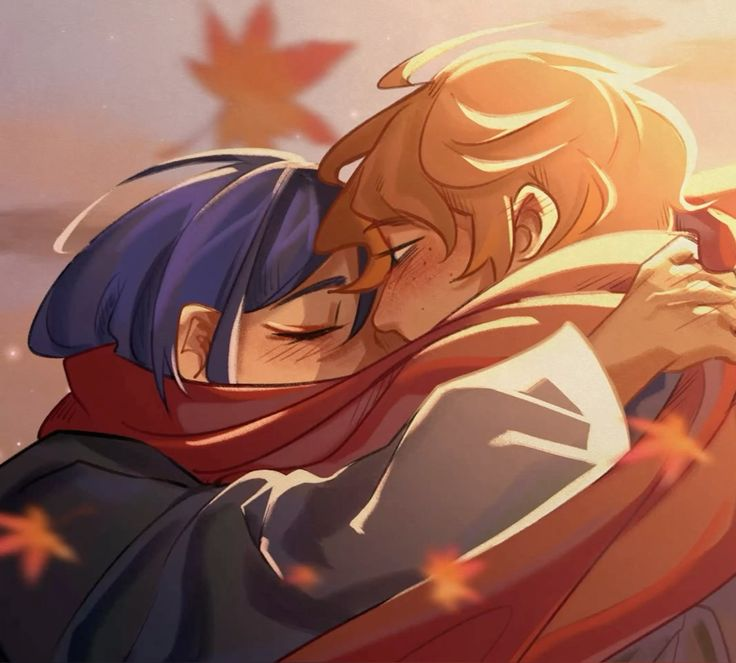

Aquel 28 de noviembre de 2022 nuestros caminos se encontraron de una manera muy curiosa y repentina. Sinceramente, creí que no pasaría nada relevante, igual que en la mayoría de los teams a los que había entrado. Pero no, en ese lugar te encontré a ti, el niño más lindo e increíble de todos. Conocerte no estaba en mis planes de ese día, pero ahora me doy cuenta de que es una de las cosas de las que jamás me arrepentiré.
Contigo aprendí
 lo que realmente significa el amor, y el no conocerte en persona creo que hace que mis sentimientos sean aún más sinceros.
lo que realmente significa el amor, y el no conocerte en persona creo que hace que mis sentimientos sean aún más sinceros.
Si pudiera agradecerte por todas las cosas que han pasado en estos tres años, me quedaría muy corto de palabras, aunque realmente siempre me quedo corto. Hay tantas cosas, algunas tan simples como sacarme una sonrisa con pocas palabras, alegrarme los días, estar siempre junto a mí, ser tú, quererme, y otras mucho más profundas, como que gracias a ti he podido superar algo muy delicado. Has influido en mí más de lo que te imaginas y, aunque no lo parezca, gracias a ti soy quien soy ahora.
Algo que nunca voy a olvidar son aquellas veces que vimos Rave o hicimos llamada. Aunque casi no hablara tanto, disfruté muchísimo esos momentos. Escucharte hablar es algo que me encanta, sin importar el tema. Amo escucharte, me gusta la manera tan única y graciosa con la que cuentas las cosas, podría oírte horas y horas. Por ti puedo quedarme callado todo el tiempo que quieras mientras hablas de las cosas que te gustan.
 Otra cosa que amo es la manera tan sincera en la que puedes escribir todo lo que sientes, cómo sin problemas me dices cosas tan lindas que, en algunas ocasiones, hasta me hacen llorar. Amo tus ojos, son tan hermosos y profundos que sé que si los viera bajo la luz de la luna, en ellos podría ver una galaxia entera. Me encanta la tranquilidad que me das cuando hablamos, siento que hablar contigo es todo lo que necesito, al hacerlo, se me quita todo el peso que traigo encima, y por eso me da sueño, porque me relajo. Sé que si estuviéramos juntos, fácilmente me quedaría dormido por lo tranquilo y seguro que me sentiría a tu lado.
Adoro la forma en la que somos tan diferentes pero a la vez tan similares, es como si estuviéramos hechos a nuestra medida. No me imagino al lado de nadie más que no seas tú. Eres la única persona con la que me gustaría estar, contigo me imagino
 toda una vida. Realmente no me importa dónde o con quién más, solo me importa estar contigo. Quiero poder salir adelante con mis estudios y tener la economía suficiente para vivir tranquilamente a tu lado. Estar junto a ti lo veo lejano, pero también algo seguro, no sabes cuánto deseo que llegue el día en que por fin podamos estar juntos, me imagino llegando allá o tú aquí, y que nos abracemos muy fuerte en un momento tan único y sincero, sinceramente es algo que he soñado en más de una ocasión.
toda una vida. Realmente no me importa dónde o con quién más, solo me importa estar contigo. Quiero poder salir adelante con mis estudios y tener la economía suficiente para vivir tranquilamente a tu lado. Estar junto a ti lo veo lejano, pero también algo seguro, no sabes cuánto deseo que llegue el día en que por fin podamos estar juntos, me imagino llegando allá o tú aquí, y que nos abracemos muy fuerte en un momento tan único y sincero, sinceramente es algo que he soñado en más de una ocasión.
De verdad, te quiero tanto como no te lo imaginas, te amo mucho, demasiado, te amo, amo cada cosa de ti, me encantas. Me gustas, realmente me gustas, eres totalmente mi tipo. Muchas gracias por estar conmigo, eres lo mejor que tengo en mi vida, aún no sé cómo puedes estar conmigo, cuando tú eres tan increíble, atractivo y cul, a tu lado me siento como solo un wey random y raro. Te amo.